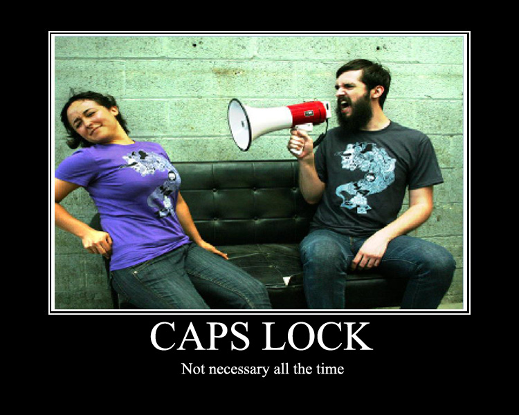

stderr
poznámky
Autor
Jakub Jedelský
Jsem ta Ops část z DevOps týmu. V GoodData ROLAP dbám o to, aby všechny databáze běžely a data se lehce nahrávala.
Social


CAPS LOCK
CHTĚL JSEM TENTO BLOG VÉST TAK NĚJAK, ŘEKNĚME, HM, "ODBORNĚ". ALE ONO SE TO NE VŽDY PODAŘÍ, ZVLÁŠTĚ KDYŽ ZJISTÍTE, ŽE EXISTUJE TAKOVÝ DEN, JAKO TEN VČERA - MEZINÁRODNÍ DEN KLÁVESY CAPS LOCK. TO SE PŘECE MUSÍ OSLAVIT. TROŠKU OPOŽDĚNÝM ČLÁNKEM.
OSOBNĚ MÁM K TÉTO KLÁVESE ODPOR A POUŽÍVÁM JI JEN VÝJIMEČNĚ (VLASTNĚ ASI JEN PŘI PSANÍ TOHOTO ČLÁNKU). DOKONCE JSEM SE VČERA TROŠKU POPLET A CAPS LOCK PŘEJMENOVAL NA CAPS LOOK. CO UŽ. ZKRÁTKA PATŘÍM K TÉ SKUPINĚ LIDÍ, KTERÝM TEXT NAPSANÝ VERZÁLKAMI PŘIPADÁ JAKO KŘIK. PĚKNĚ TO VYSTIHUJE TŘEBA TENTO OBRÁZEK:

NA WIKIPEDII PÍŠÍ, ŽE NA MÍSTĚ CAPS LOCKU BYLA DŘÍVE KLÁVESA CTRL. NABÍZÍ SE TAK POLEMIKA, JESTLI TU KLÁVESU NEPŘIDALI NĚJAKCÍ NEVRLÍ INŽENÝŘI, ABY NA SEBE PŘES IRC MOHLI JEDNODUŠEJI KŘIČET.. NEBO NA SVÉ ŠÉFY. NEBO SNAD FAKT MŮŽE PLNIT NĚJAKOU "VYŠŠÍ" FUNKCI?
K MEZINÁRODNÍMU DNI KLÁVESY CAPS LOCK JSOU VYTVOŘENY I STRÁNKY, KDE UVIDÍTE SPOSTU FOTEK, JAK CAPS LOCK VYPADÁ: HTTP://CAPSLOCKDAY.COM/